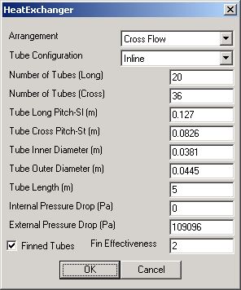

The Heat Exchanger Module utilizes the effectiveness-NTU method to calculate the heat transferred between a gas and liquid stream. In order to compute outlet fluid properties the NTU method requires only inlet gas and water stream properties in addition to unit effectiveness. The heat transfer rate effectiveness is internally computed from an array of user-specified unit properties.
Module calculations incorporate the use of a digitized family of curves from "Steam" ¹ and the module runs an interpolation routine to calculate outlet gas and water properties.
|  | This user interface prompts the user for properties of the heat exchanger unit. These data fields are necessary in order to compute the transfer heat rate effectiveness of the unit. The Internal Pressure Drop field allows the user to specify a desired pressure drop for the water stream as it flows through the module, whereas the External Pressure Drop specifies the change in pressure of the gas stream through the module. The user can also toggle whether the unit uses Finned Tubes and (when toggled) the Fin Effectiveness of those tubes. |